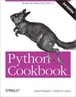

Resources
This page contains many related and useful links about computer programming and software engineering.
IUST course arsenal
This repository contains my notes, assignments, presentations, and projects for some graduate courses in computer science and artificial intelligence. In almost all of these courses, I was in the top three students among my classmates. I am pleased to share these materials with all. Any feedback about them will be great. The IUST Graduate Course Arsenal provides a roadmap for graduate students who want to advance quickly and helps them to go one step forward toward discovering new topics and producing their original research. The repository will be publicly available until March 11, 2023.
Micropedia
From July 2013 my friends and I maintain Micropedia a free software engineering/ programming tutorials website in Persian. You can find some basic programming tutorials on Micropedia.
Have a programming question? Join us on Micropedia -:)
- Micropedia code group on the telegram or Contact with ID @mztel
- Micropedia programming tutorials (in Persian)
- Micropedia code repository
Machine learning and deep learning
- A survey of sequence-to-sequence learning with neural networks (in Persian) Fall 2017.
- Hacker's guide to neural networks by Dr. Andrej Karpathy
- IUST deep learning course by Dr. Mohammad Taher Pilehvar
- IUST Deep learning with google TensorFlow by Eng. Mahdizade
- Keras book, documentation and blog
Advanced software engineering
| Row | Photo | Resource name | Additional links |
|---|---|---|---|
| 1 | An introduction to Algorithms | ||
| 2 | Object oriented design and analysis | ||
| 3 |  |
Design patterns | A very good visualized book. |
| 4 | System design and analysis in software engineering (in Persian) | By Prof. Saeed Parsa (My doctoral advisor) | |
| 5 | Performance testing in software engineering (in Persian) | By Prof. Saeed Parsa (My doctoral advisor) |
Computer programming
A road-map to learn programming/ codding.
| Row | Photo | Resource name | Additional links |
|---|---|---|---|
| 1 | Micropedia essential course on C and C++ (for beginners) | www.micropedia.ir | |
| 2 |  |
C How to Program (Book by Harvey Deitel and Paul Deitel) | www.deitel.com |
| 3 | C++ How to Program (Book by Harvey Deitel and Paul Deitel) | www.deitel.com | |
| 4 | JAVA How to Program (Book by Harvey Deitel and Paul Deitel) | www.deitel.com | |
| 5 | Head First Python: A Brain-Friendly Guide | www.oreilly.com |
Computer programming resources for children
| Row | Photo | Resource name | Additional links |
|---|---|---|---|
| 1 |  |
Scratch (MIT Media Lab) | www.scratch.mit.edu |
| 2 |  |
Python for Kids: A Playful Introduction to Programming | www.oreilly.com |
| 3 | Head First Python: A Brain-Friendly Guide | www.oreilly.com | |
| 4 |  | Python Cookbook | www.oreilly.com |
Useful links
My profiles
-
My GitHub projects [New]
-
My GitHub projects [Old]
Miscellaneous
Blog posts and articles
-
Data and end of homelessness by Morteza Zakeri (in Persian), Spring 2019
-
An introduction to NoSQL databases by Morteza Zakeri (in Persian), Fall 2016
-
A survival guide to a PhD by Dr. Andrej Karpathy
Non-profit projects
Outdated blogs
-
My old blog 3, active from 2018 to 2019
-
My old blog 2, active from 2016 to 2017
-
My old blog 1, active from 2010 to 2015
Disclaimer
While I strive for accuracy and precision in the materials and resources provided, I cannot guarantee the absence of scientific inaccuracies or errors. Should you identify any mistakes, instances of copyright infringement, or other concerns, I kindly ask that you inform me so that I may address and resolve them promptly. Your feedback is invaluable in ensuring the quality and integrity of the content.